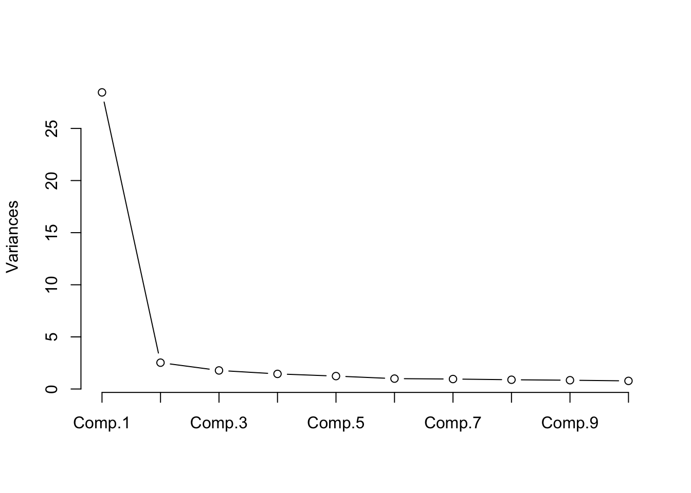
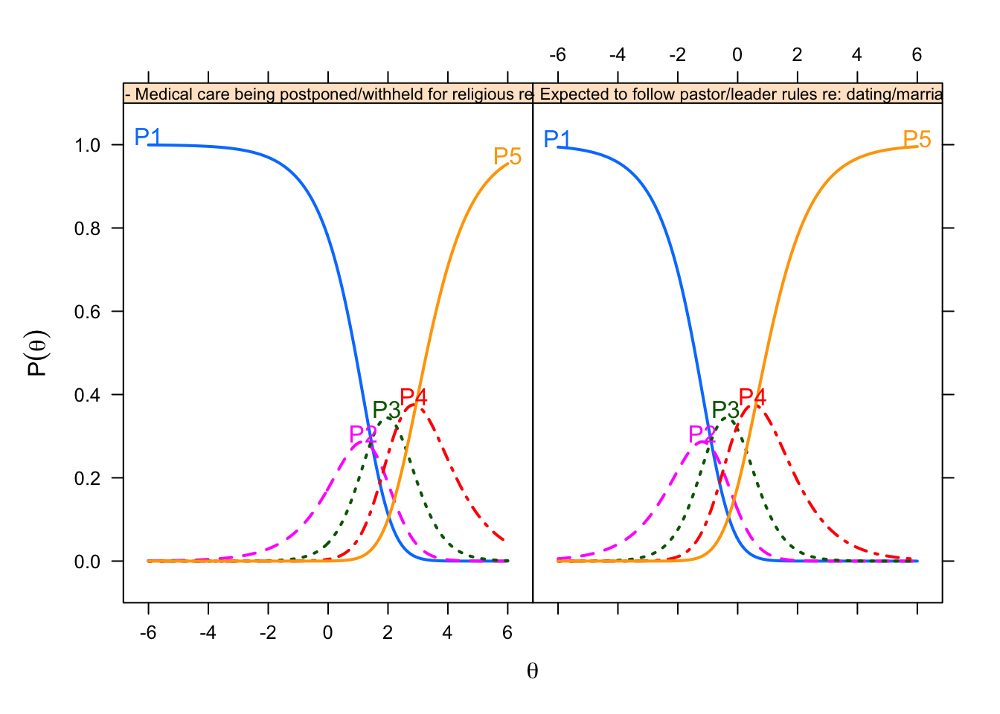
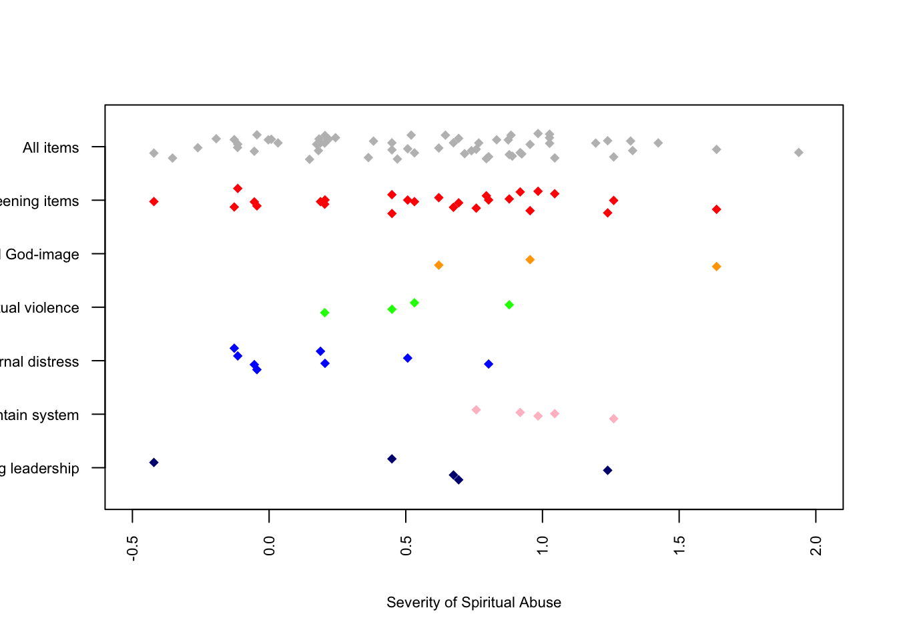

Results
Participant Characteristics
In total, 3,222 individuals responded to the survey. Participants who did not opt out and completed at least 50% of the spiritual abuse item pool were considered complete responders and included in the study (N=3,219). Non-responders included those who responded to less than half of the items (N=3).
Almost all participants (N = 3,064) answered demographics items, and the results are presented Table 1 below. Compared to the general U.S. population, the sample was largely white (86%) and Protestant (57%). The average respondent saw themselves as slightly theologically liberal (M = 4.5, range 1-7). About 4 in 5 identified as straight (82%), and most were raised in a Christian home (87%).
| n | mean | sd | median | trimmed | mad | min | max | range | skew | kurtosis | se | |
|---|---|---|---|---|---|---|---|---|---|---|---|---|
| Age | 3071 | 2.24 | 1.21 | 2 | 2.10 | 1.48 | 1 | 5 | 4 | 0.62 | -0.62 | 0.02 |
| Gender | 3056 | 38.57 | 12.27 | 36 | 37.21 | 10.38 | 16 | 88 | 72 | 0.98 | 0.59 | 0.22 |
| Sexual orientation | 3060 | 1.67 | 0.82 | 2 | 1.59 | 0.00 | 1 | 6 | 5 | 2.67 | 10.78 | 0.01 |
| Race | 3064 | 1.36 | 1.01 | 1 | 1.07 | 0.00 | 1 | 6 | 5 | 3.08 | 9.04 | 0.02 |
| Raised in Christian home | 3060 | 3.08 | 0.79 | 3 | 3.00 | 0.00 | 1 | 7 | 6 | 3.33 | 16.84 | 0.01 |
| Denomination of most abuse | 3061 | 1.09 | 0.28 | 1 | 1.00 | 0.00 | 1 | 2 | 1 | 2.93 | 6.60 | 0.00 |
| Racial makeup of abusive community | 3047 | 5.20 | 3.33 | 5 | 4.69 | 2.96 | 1 | 17 | 16 | 1.47 | 2.19 | 0.06 |
| Racial makeup of abusive group leadership | 3042 | 1.15 | 0.41 | 1 | 1.04 | 0.00 | 1 | 3 | 2 | 2.69 | 6.85 | 0.01 |
| Gender makeup of abusive group leadership | 3044 | 1.09 | 0.35 | 1 | 1.00 | 0.00 | 1 | 3 | 2 | 3.90 | 15.41 | 0.01 |
| Involvement in abusive group | 3048 | 1.82 | 0.79 | 2 | 1.76 | 1.48 | 1 | 5 | 4 | 0.48 | -0.78 | 0.01 |
| Current religious identification | 3054 | 5.54 | 1.99 | 7 | 5.92 | 0.00 | 1 | 7 | 6 | -1.25 | 0.24 | 0.04 |
| Current theological identification | 3057 | 3.24 | 2.96 | 1 | 2.92 | 0.00 | 1 | 8 | 7 | 0.70 | -1.36 | 0.05 |
| Current view of Bible | 2030 | 4.49 | 1.55 | 5 | 4.54 | 1.48 | 1 | 7 | 6 | -0.30 | -0.57 | 0.03 |
| Generation | 3054 | 2.23 | 0.54 | 2 | 2.23 | 0.00 | 1 | 3 | 2 | 0.11 | -0.23 | 0.01 |
| Podcast Use | 3056 | 2.43 | 0.79 | 2 | 2.35 | 0.00 | 1 | 5 | 4 | 0.76 | 0.22 | 0.01 |
Initial Item Analysis
In Table 2 we report classical statistics for the 66 SHAS items. We sorted the items by their mean. We flagged six items – EQ17, EQ27, EQ41, EQ46, EQ55, EQ60 – due to extreme values of skew (less than -2 or greater than +2) or kurtosis (less than -7 or greater than +7) and item-total correlations below 0.50. Category response proportions show that most people responded “Never” to these items. Thus these items do not apply to the vast majority of people in this population. We removed them from the item pool.
| 1 | 2 | 3 | 4 | 5 | n | mean | sd | skew | kurtosis | Item-total correlation | flag | |
|---|---|---|---|---|---|---|---|---|---|---|---|---|
| EQ46 - Treated as less than because of my skin color | 0.94 | 0.03 | 0.02 | 0.01 | 0.00 | 3211 | 1.11 | 0.48 | 5.15 | 28.93 | 0.16 |
|
| EQ41 - Denied opportunities to serve because of my sexual orientation | 0.89 | 0.02 | 0.03 | 0.02 | 0.03 | 3211 | 1.27 | 0.88 | 3.30 | 9.87 | 0.31 |
|
| EQ17 - Treated as less than b/c my sexual orientation | 0.88 | 0.02 | 0.03 | 0.03 | 0.04 | 3208 | 1.34 | 0.97 | 2.87 | 6.96 | 0.35 |
|
| EQ47 - Medical care being postponed/withheld for religious reasons | 0.70 | 0.17 | 0.09 | 0.02 | 0.01 | 3218 | 1.48 | 0.86 | 1.93 | 3.40 | 0.52 | |
| EQ60 - Encouraged by leader to stay in abusive marriage | 0.76 | 0.09 | 0.07 | 0.05 | 0.02 | 3214 | 1.49 | 0.99 | 2.05 | 3.22 | 0.48 |
|
| EQ55 - Hearing cultural references in sermons unfamiliar to my race/eth. subculture | 0.66 | 0.18 | 0.11 | 0.04 | 0.02 | 3205 | 1.58 | 0.95 | 1.66 | 2.12 | 0.28 |
|
| IQ72 - Feeling as if God harmed me directly | 0.64 | 0.17 | 0.13 | 0.04 | 0.02 | 3070 | 1.64 | 0.99 | 1.52 | 1.55 | 0.54 | |
| IQ81 - Nightmares about my negative religious experiences | 0.56 | 0.21 | 0.15 | 0.06 | 0.02 | 3073 | 1.77 | 1.04 | 1.23 | 0.66 | 0.65 | |
| EQ65 - Cut off/shunned by more religious family members | 0.59 | 0.16 | 0.13 | 0.08 | 0.04 | 3220 | 1.82 | 1.18 | 1.27 | 0.48 | 0.61 | |
| EQ10 - Asked to give up personal goals by pastor | 0.59 | 0.16 | 0.13 | 0.08 | 0.04 | 3220 | 1.83 | 1.18 | 1.25 | 0.44 | 0.64 | |
| EQ26 - Pressured to forgive abuser while abuse was ongoing | 0.60 | 0.14 | 0.11 | 0.09 | 0.06 | 3212 | 1.87 | 1.27 | 1.24 | 0.21 | 0.66 | |
| EQ24 - Expected to consult pastor/leader before making non-religious decisions | 0.56 | 0.16 | 0.16 | 0.08 | 0.04 | 3221 | 1.89 | 1.18 | 1.10 | 0.07 | 0.66 | |
| EQ23 - Prayer replacing needed medical interventions | 0.51 | 0.21 | 0.17 | 0.08 | 0.03 | 3219 | 1.92 | 1.13 | 1.02 | 0.02 | 0.64 | |
| EQ27 - Denied opportunities to serve b/c of my gender | 0.60 | 0.11 | 0.12 | 0.09 | 0.08 | 3217 | 1.94 | 1.35 | 1.14 | -0.13 | 0.48 |
|
| EQ31 - Shunned/ignored by pastor/church/group | 0.46 | 0.22 | 0.18 | 0.09 | 0.05 | 3217 | 2.03 | 1.19 | 0.92 | -0.20 | 0.64 | |
| EQ30 - Deterred from seeking mental health treatment/counseling/medication | 0.50 | 0.17 | 0.17 | 0.11 | 0.05 | 3219 | 2.04 | 1.25 | 0.88 | -0.46 | 0.70 | |
| EQ43 - Shamed by pastor/group for poor spiritual/moral performance | 0.46 | 0.22 | 0.18 | 0.10 | 0.04 | 3217 | 2.04 | 1.18 | 0.86 | -0.31 | 0.73 | |
| IQ68 - Anxiety attacks triggered by religious stimuli | 0.49 | 0.17 | 0.19 | 0.11 | 0.05 | 3073 | 2.06 | 1.23 | 0.83 | -0.51 | 0.68 | |
| EQ52 - Blamed for harm I suffered rather than blaming who harmed me | 0.48 | 0.19 | 0.16 | 0.12 | 0.05 | 3217 | 2.08 | 1.26 | 0.85 | -0.52 | 0.76 | |
| IQ70 - Feeling betrayed by God | 0.42 | 0.24 | 0.21 | 0.09 | 0.05 | 3069 | 2.11 | 1.18 | 0.79 | -0.36 | 0.56 | |
| EQ49 - Leadership/group protecting and elevating abusive individuals | 0.44 | 0.22 | 0.18 | 0.11 | 0.05 | 3213 | 2.12 | 1.23 | 0.79 | -0.50 | 0.72 | |
| EQ16 - Church/community abandoning me in difficult time | 0.45 | 0.21 | 0.17 | 0.11 | 0.06 | 3217 | 2.13 | 1.27 | 0.83 | -0.50 | 0.69 | |
| EQ57 - Developing mental/physical ailments from conforming to group/leader’s expectation | 0.48 | 0.16 | 0.16 | 0.12 | 0.07 | 3219 | 2.15 | 1.33 | 0.78 | -0.70 | 0.72 | |
| EQ20 - Members pressured to give money despite financial hardship | 0.50 | 0.15 | 0.15 | 0.11 | 0.09 | 3217 | 2.16 | 1.39 | 0.82 | -0.71 | 0.68 | |
| EQ62 - Scripture used to justify physical violence | 0.43 | 0.19 | 0.21 | 0.11 | 0.05 | 3220 | 2.16 | 1.24 | 0.69 | -0.67 | 0.65 | |
| EQ59 - Pastor/group blame victim for their abuse | 0.42 | 0.21 | 0.19 | 0.12 | 0.05 | 3217 | 2.16 | 1.23 | 0.70 | -0.65 | 0.76 | |
| EQ21 - Taught I would risk Hell if left my church/group | 0.51 | 0.13 | 0.13 | 0.10 | 0.13 | 3218 | 2.20 | 1.47 | 0.81 | -0.83 | 0.69 | |
| EQ50 - Treated as less than because of my gender | 0.52 | 0.08 | 0.15 | 0.13 | 0.11 | 3219 | 2.23 | 1.47 | 0.70 | -1.04 | 0.54 | |
| IQ82 - Having trouble navigating life outside my church/community | 0.38 | 0.23 | 0.24 | 0.11 | 0.05 | 3071 | 2.24 | 1.21 | 0.62 | -0.62 | 0.61 | |
| EQ64 - Witnessing women pressured to stay in unfaithful/abusive marriages | 0.39 | 0.23 | 0.19 | 0.12 | 0.07 | 3220 | 2.26 | 1.27 | 0.67 | -0.70 | 0.71 | |
| EQ28 - Leadershi/group protecting abusive individuals | 0.37 | 0.24 | 0.19 | 0.13 | 0.06 | 3216 | 2.26 | 1.25 | 0.63 | -0.73 | 0.72 | |
| EQ40 - Threatening Divine punishment to keep group members in line | 0.44 | 0.17 | 0.18 | 0.12 | 0.10 | 3220 | 2.28 | 1.39 | 0.67 | -0.88 | 0.75 | |
| EQ63 - Shamed by pastor/group for raising questions or concerns | 0.36 | 0.23 | 0.22 | 0.13 | 0.06 | 3217 | 2.30 | 1.25 | 0.58 | -0.77 | 0.77 | |
| EQ19 - Behavior excessively monitored by pastor/group | 0.40 | 0.18 | 0.19 | 0.15 | 0.08 | 3219 | 2.32 | 1.33 | 0.56 | -0.96 | 0.75 | |
| EQ51 - Extreme pressure to be pastor/missionary/spiritual leader | 0.41 | 0.19 | 0.17 | 0.14 | 0.10 | 3216 | 2.33 | 1.38 | 0.59 | -0.98 | 0.62 | |
| EQ53 - Scripture used to justify abusive parent-child behavior | 0.39 | 0.19 | 0.20 | 0.14 | 0.09 | 3218 | 2.36 | 1.35 | 0.55 | -0.97 | 0.73 | |
| IQ79 - Distrust of God | 0.33 | 0.23 | 0.24 | 0.12 | 0.08 | 3068 | 2.40 | 1.27 | 0.50 | -0.81 | 0.61 | |
| EQ34 - Scripture used to justify physical punishment/severe discipline | 0.34 | 0.19 | 0.22 | 0.16 | 0.09 | 3219 | 2.46 | 1.33 | 0.42 | -1.05 | 0.65 | |
| EQ29 - Feeling special when in pastor’s good graces; otherwise ignored | 0.34 | 0.19 | 0.22 | 0.16 | 0.09 | 3213 | 2.47 | 1.34 | 0.40 | -1.08 | 0.69 | |
| IQ73 - Self-hatred or self-loathing | 0.31 | 0.21 | 0.24 | 0.15 | 0.09 | 3072 | 2.50 | 1.31 | 0.38 | -1.00 | 0.64 | |
| EQ11 - Disagree w/pastor portrayed as evil | 0.32 | 0.21 | 0.20 | 0.17 | 0.10 | 3216 | 2.52 | 1.35 | 0.38 | -1.12 | 0.77 | |
| EQ58 - Terror/horror used to motivate religious decisions | 0.32 | 0.18 | 0.24 | 0.16 | 0.10 | 3220 | 2.53 | 1.34 | 0.34 | -1.09 | 0.73 | |
| EQ7 - Pastor speaking on God’s behalf | 0.35 | 0.18 | 0.19 | 0.16 | 0.13 | 3215 | 2.54 | 1.43 | 0.39 | -1.21 | 0.67 | |
| EQ42 - Seeing others shamed/shunned by pastor/leader/group | 0.25 | 0.24 | 0.26 | 0.17 | 0.08 | 3215 | 2.60 | 1.25 | 0.28 | -0.96 | 0.77 | |
| EQ44 - Love/acceptance offered only for high spiritual/moral performance | 0.30 | 0.18 | 0.23 | 0.19 | 0.10 | 3217 | 2.61 | 1.35 | 0.24 | -1.20 | 0.80 | |
| EQ56 - Being made to feel I was crazy/weird for doubts/questions | 0.27 | 0.17 | 0.23 | 0.21 | 0.12 | 3217 | 2.72 | 1.37 | 0.14 | -1.24 | 0.82 | |
| EQ18 - Church/pastor discourage critical thinking | 0.27 | 0.17 | 0.24 | 0.19 | 0.13 | 3220 | 2.75 | 1.37 | 0.14 | -1.21 | 0.77 | |
| EQ45 - Developmentally-inappropriate/anxious Hell/Satan/demons taught to young children | 0.29 | 0.17 | 0.20 | 0.18 | 0.16 | 3219 | 2.76 | 1.45 | 0.18 | -1.33 | 0.72 | |
| IQ78 - A lack of self-worth | 0.23 | 0.19 | 0.27 | 0.21 | 0.11 | 3071 | 2.77 | 1.30 | 0.10 | -1.09 | 0.67 | |
| EQ36 - Mental/physical problems interpreted as spiritual/moral weakness | 0.24 | 0.19 | 0.24 | 0.21 | 0.12 | 3216 | 2.78 | 1.34 | 0.11 | -1.17 | 0.77 | |
| EQ61 - Developmentally-inappropriate/anxious end times descriptions taught to young children | 0.30 | 0.15 | 0.20 | 0.19 | 0.17 | 3219 | 2.78 | 1.47 | 0.14 | -1.37 | 0.72 | |
| EQ32 - Feeling unable to express unhappiness | 0.24 | 0.16 | 0.27 | 0.21 | 0.11 | 3219 | 2.79 | 1.32 | 0.05 | -1.14 | 0.73 | |
| IQ74 - Sadness over the loss of my faith/religious community | 0.22 | 0.19 | 0.27 | 0.21 | 0.11 | 3071 | 2.79 | 1.29 | 0.07 | -1.08 | 0.60 | |
| IQ76 - Feeling I wasted years of my life in a church/set of beliefs | 0.28 | 0.16 | 0.19 | 0.18 | 0.19 | 3072 | 2.83 | 1.48 | 0.12 | -1.39 | 0.74 | |
| EQ54 - Being explicitly taught to distrust my intuitions | 0.23 | 0.16 | 0.24 | 0.20 | 0.17 | 3217 | 2.92 | 1.40 | 0.01 | -1.26 | 0.75 | |
| EQ37 - Made to feel less spiritually mature than pastor/leadership | 0.22 | 0.17 | 0.24 | 0.21 | 0.16 | 3221 | 2.94 | 1.38 | -0.01 | -1.22 | 0.75 | |
| EQ38 - Unrealistic demands placed on my moral/religious behavior | 0.22 | 0.16 | 0.24 | 0.20 | 0.18 | 3217 | 2.95 | 1.40 | -0.01 | -1.26 | 0.80 | |
| IQ71 - Avoiding religious activities/settings to reduce distressing feelings | 0.19 | 0.17 | 0.24 | 0.22 | 0.17 | 3074 | 3.01 | 1.36 | -0.06 | -1.19 | 0.74 | |
| IQ69 - Lack of spiritual direction/purpose | 0.13 | 0.20 | 0.32 | 0.23 | 0.12 | 3071 | 3.01 | 1.20 | -0.06 | -0.83 | 0.57 | |
| EQ39 - Made to feel shame over natural sexual desires (not actions) | 0.24 | 0.13 | 0.20 | 0.21 | 0.22 | 3219 | 3.05 | 1.48 | -0.12 | -1.37 | 0.72 | |
| IQ80 - Feeling isolated | 0.14 | 0.18 | 0.29 | 0.27 | 0.13 | 3070 | 3.07 | 1.23 | -0.17 | -0.91 | 0.68 | |
| IQ77 - Anger upon reflecting on negative religious experiences | 0.15 | 0.18 | 0.26 | 0.26 | 0.15 | 3075 | 3.08 | 1.28 | -0.16 | -1.02 | 0.77 | |
| EQ35 - Taught to distrust my emotions | 0.19 | 0.14 | 0.23 | 0.23 | 0.21 | 3217 | 3.12 | 1.39 | -0.18 | -1.20 | 0.74 | |
| EQ25 - Feeling unable to raise questions and issues | 0.15 | 0.15 | 0.25 | 0.27 | 0.18 | 3217 | 3.18 | 1.32 | -0.26 | -1.04 | 0.76 | |
| EQ66 - Others treated as less than due to their sexual orientation | 0.18 | 0.12 | 0.21 | 0.25 | 0.24 | 3216 | 3.27 | 1.41 | -0.34 | -1.15 | 0.71 | |
| EQ22 - Expected to follow pastor/leader rules re: dating/marriage/sex | 0.20 | 0.11 | 0.15 | 0.24 | 0.30 | 3218 | 3.33 | 1.49 | -0.39 | -1.28 | 0.70 |
Unidimensionality and Local Independence
Principal Components. We first analyzed the principal components in the SHAS items. Like factor analysis, component analysis attempts to summarize the common variance in items by identifying a smaller set of latent sources of covariation. Principal components analysis differs from factor analysis by treating all of the common variance among the items as the total variance to be explained [verify this].

Figure 1: Principal Components Analysis
As shown in the scree plot, the first component was large, accounting for 48% of the variance. The second, third, and fourth components accounted for 4%, 3%, and 2% of the variance, respectively. The ratio of the eigenvalue of the first (largest) component to that of the second is approximately 13.
Proportion of variance. We estimated a unidimensional Rasch model on dichotomized responses to the 59 SHAS items and saved the residuals of the person parameters. We calculated the variance in the observed item responses and the variance of the residuals.
[1] 0.2264541The proportion of variance explained by the Rasch model was .23. If the unidimensionalty assumption is safely met if the Rasch model explains 20% of the variance in the data (Reckase), then the SHAS data meet this criterion.
Principal Component Analysis of Residuals (PCAR). We examined the principal components of the correlations among residuals of the Rasch analysis. The premise is that once the Rasch model has been estimated, correlations among the item residuals should be minimal. Linacre () suggests that contrasts with eigenvalues of 2.0 or below can be considered noise.

Figure 2: Contrasts from PCA of Standardized Residual Correlations
In Figure 2, our PCAR analysis found only one contrast that rose above that 2.0 threshold.
Q3. Finally, we calculated the Q3 statistic (Yen, 1984). This statistic examines the correlations among item residuals, the premise being that the latent trait should account for so much common variance in the item responses that any net correlations among the items should be weak. The Q3 statistic index criteria are that the raw residual correlation between pairs of items should never exceed 0.10 (Marais & Andrich, 2008). Of the 1,711 item pairs, the mean correlation was -0.017 with a standard deviation of 0.035. Thus, most of the residual correlations among items were very weak.
WLE Reliability= 0.918 Yen's Q3 Statistic based on an estimated theta score
*** 60 Items | 1770 item pairs
*** Q3 Descriptives
M SD Min 10% 25% 50% 75% 90% Max
-0.017 0.036 -0.109 -0.055 -0.040 -0.020 -0.001 0.025 0.321 
Figure 3: Matrix of Correlations of Item Residuals
Figure 3 plots the matrix of correlations between item residuals. Each square depicts a correlation. The squares are shaded in grey with the lightest shade indicating the weakest correlations. As hoped, the vast majority of squares are very light, indicating weak correlations among the item residuals.
Item Response Theory (IRT) Analysis
We used the Rasch Rating Scale Model (RSM) (Andrich 1978) to examine the SHAS item pool. The RSM is an extension of the Rasch model (designed for dichotomous items) for use with polytomous items based on rating scales such as Likert scales of agreement (Embretson and Reise 2000). Rasch models, like all IRT models, combine (or “calibrate”) information from items with information from persons to arrive at a common scale for measuring both an item’s and a person’s level of a latent trait, in this case, spiritual abuse. Because IRT was developed to measure student achievement, IRT statistics for both items and person tend to use language of “ability” and “difficulty.” For our purpose to measure a psychological trait like exposure to abuse, we chose instead to adopt language of “severity.” We will use person parameters and scale scores to represent participants’ severity of abuse, and we will describe item “difficulty” parameters as “severity” parameters.
The Rasch model estimates the probability of a person choosing among several response options (i.e. Never, Once or twice, etc.) given the item’s severity of the item and the person’s severity of the latent trait (spiritual abuse). The increase in severity involved in choosing from between two response categories is called a “step parameter”. The RSM assumes that all items use the same rating scale. As a Rasch model, it assumes that all items discriminate equally well and thus fixes the discrimination parameter to 1. The model also fixes the step parameters of all the items on the premise that the response categories are the same for all items. What the RSM frees to vary are the item severity parameters. Thus the focus of the RSM is the differences in item severities. If all of these assumptions are true – that the items and their rating scales differentiate persons equally well and differ only in overall severity – then the observed pattern of item responses will closely match the pattern of items responses expected by the RSM and the model will fit.
Table 3 reports the item parameters and fit statistics estimated by the RSM for all 60 SHAS items. The first four columns, b1 to b4, report the estimated thresholds (or step parameters) for each item. These represent the average increase in severity associated with choosing the next response category on the scale, such as between “Never” and “Once or twice”. In the RSM, these step parameters are fixed to be the same across all items, the premise being that the rating scale distinguishes between victims of more or less spiritual abuse equally well across items.
If the rating scale functions as intended, the step parameters should increase. The first, b1, should be the lowest, b2 the next highest, and so on. When this does not happen - that is, when a step parameter is smaller than one before - this is called a step reversal. In Table 3, b2 is smaller than b1, suggesting that the increase in severity of choosing “Sometimes” over “Once or twice” is negative.
Items do vary by the severity of spiritual abuse they represent. This value, the severity parameter, is column c. On this value we sorted the items to compare of their relative severity.
| b1 | b2 | b3 | b4 | c | outfit | z.outfit | infit | z.infit | flag | |
|---|---|---|---|---|---|---|---|---|---|---|
| EQ47 - Medical care being postponed/withheld for religious reasons | 0.03 | -0.08 | 0.83 | 1.47 | -1.47 | 1.04 | 0.72 | 1.11 | 2.92 | |
| IQ72 - Feeling as if God harmed me directly | 0.03 | -0.08 | 0.83 | 1.47 | -1.17 | 1.07 | 1.37 | 1.17 | 5.06 | |
| IQ81 - Nightmares about my negative religious experiences | 0.03 | -0.08 | 0.83 | 1.47 | -0.96 | 0.83 | -3.65 | 0.92 | -2.91 | |
| EQ10 - Asked to give up personal goals by pastor | 0.03 | -0.08 | 0.83 | 1.47 | -0.86 | 1.04 | 0.81 | 1.15 | 4.96 | |
| EQ65 - Cut off/shunned by more religious family members | 0.03 | -0.08 | 0.83 | 1.47 | -0.86 | 1.22 | 4.40 | 1.22 | 7.19 | |
| EQ26 - Pressured to forgive abuser while abuse was ongoing | 0.03 | -0.08 | 0.83 | 1.47 | -0.80 | 1.30 | 6.20 | 1.25 | 8.11 | |
| EQ24 - Expected to consult pastor/leader before making non-religious decisions | 0.03 | -0.08 | 0.83 | 1.47 | -0.78 | 0.97 | -0.68 | 1.03 | 1.23 | |
| EQ23 - Prayer replacing needed medical interventions | 0.03 | -0.08 | 0.83 | 1.47 | -0.73 | 0.97 | -0.66 | 1.03 | 1.12 | |
| EQ31 - Shunned/ignored by pastor/church/group | 0.03 | -0.08 | 0.83 | 1.47 | -0.59 | 1.05 | 1.17 | 1.03 | 1.09 | |
| EQ30 - Deterred from seeking mental health treatment/counseling/medication | 0.03 | -0.08 | 0.83 | 1.47 | -0.56 | 0.90 | -2.55 | 0.98 | -0.78 | |
| EQ43 - Shamed by pastor/group for poor spiritual/moral performance | 0.03 | -0.08 | 0.83 | 1.47 | -0.56 | 0.75 | -6.84 | 0.78 | -8.75 | |
| IQ68 - Anxiety attacks triggered by religious stimuli | 0.03 | -0.08 | 0.83 | 1.47 | -0.56 | 0.94 | -1.61 | 1.02 | 0.78 | |
| EQ52 - Blamed for harm I suffered rather than blaming who harmed me | 0.03 | -0.08 | 0.83 | 1.47 | -0.52 | 0.76 | -6.71 | 0.84 | -6.40 | |
| IQ70 - Feeling betrayed by God | 0.03 | -0.08 | 0.83 | 1.47 | -0.49 | 1.30 | 6.90 | 1.22 | 7.73 | |
| EQ49 - Leadership/group protecting and elevating abusive individuals | 0.03 | -0.08 | 0.83 | 1.47 | -0.47 | 0.84 | -4.35 | 0.88 | -4.60 | |
| EQ16 - Church/community abandoning me in difficult time | 0.03 | -0.08 | 0.83 | 1.47 | -0.45 | 0.97 | -0.81 | 1.01 | 0.34 | |
| EQ20 - Members pressured to give money despite financial hardship | 0.03 | -0.08 | 0.83 | 1.47 | -0.43 | 1.08 | 2.12 | 1.22 | 7.86 | |
| EQ57 - Developing mental/physical ailments from conforming to group/leader’s expectation | 0.03 | -0.08 | 0.83 | 1.47 | -0.42 | 0.89 | -3.03 | 1.02 | 0.90 | |
| EQ62 - Scripture used to justify physical violence | 0.03 | -0.08 | 0.83 | 1.47 | -0.42 | 1.00 | -0.09 | 1.05 | 1.87 | |
| EQ59 - Pastor/group blame victim for their abuse | 0.03 | -0.08 | 0.83 | 1.47 | -0.41 | 0.72 | -8.36 | 0.77 | -9.69 | |
| EQ21 - Taught I would risk Hell if left my church/group | 0.03 | -0.08 | 0.83 | 1.47 | -0.38 | 1.27 | 6.57 | 1.35 | 12.00 | |
| IQ82 - Having trouble navigating life outside my church/community | 0.03 | -0.08 | 0.83 | 1.47 | -0.34 | 1.09 | 2.31 | 1.10 | 3.69 | |
| EQ50 - Treated as less than because of my gender | 0.03 | -0.08 | 0.83 | 1.47 | -0.33 | 1.86 | 18.72 | 1.86 | 26.82 |
|
| EQ28 - Leadershi/group protecting abusive individuals | 0.03 | -0.08 | 0.83 | 1.47 | -0.31 | 0.85 | -4.24 | 0.86 | -5.90 | |
| EQ64 - Witnessing women pressured to stay in unfaithful/abusive marriages | 0.03 | -0.08 | 0.83 | 1.47 | -0.31 | 0.94 | -1.75 | 0.94 | -2.33 | |
| EQ40 - Threatening Divine punishment to keep group members in line | 0.03 | -0.08 | 0.83 | 1.47 | -0.29 | 0.88 | -3.56 | 0.97 | -1.01 | |
| EQ63 - Shamed by pastor/group for raising questions or concerns | 0.03 | -0.08 | 0.83 | 1.47 | -0.25 | 0.70 | -9.32 | 0.74 | -11.22 | |
| EQ19 - Behavior excessively monitored by pastor/group | 0.03 | -0.08 | 0.83 | 1.47 | -0.23 | 0.81 | -5.62 | 0.88 | -4.83 | |
| EQ51 - Extreme pressure to be pastor/missionary/spiritual leader | 0.03 | -0.08 | 0.83 | 1.47 | -0.22 | 1.33 | 8.52 | 1.34 | 11.98 | |
| EQ53 - Scripture used to justify abusive parent-child behavior | 0.03 | -0.08 | 0.83 | 1.47 | -0.19 | 0.89 | -3.28 | 0.96 | -1.56 | |
| IQ79 - Distrust of God | 0.03 | -0.08 | 0.83 | 1.47 | -0.17 | 1.26 | 7.03 | 1.16 | 5.97 | |
| EQ34 - Scripture used to justify physical punishment/severe discipline | 0.03 | -0.08 | 0.83 | 1.47 | -0.08 | 1.14 | 4.08 | 1.12 | 4.53 | |
| EQ29 - Feeling special when in pastor’s good graces; otherwise ignored | 0.03 | -0.08 | 0.83 | 1.47 | -0.06 | 1.03 | 1.00 | 1.04 | 1.43 | |
| IQ73 - Self-hatred or self-loathing | 0.03 | -0.08 | 0.83 | 1.47 | -0.05 | 1.11 | 3.07 | 1.11 | 4.13 | |
| EQ11 - Disagree w/pastor portrayed as evil | 0.03 | -0.08 | 0.83 | 1.47 | -0.01 | 0.79 | -7.03 | 0.81 | -8.14 | |
| EQ7 - Pastor speaking on God’s behalf | 0.03 | -0.08 | 0.83 | 1.47 | 0.00 | 1.31 | 8.59 | 1.22 | 8.27 | |
| EQ58 - Terror/horror used to motivate religious decisions | 0.03 | -0.08 | 0.83 | 1.47 | 0.02 | 0.88 | -3.93 | 0.91 | -3.61 | |
| EQ42 - Seeing others shamed/shunned by pastor/leader/group | 0.03 | -0.08 | 0.83 | 1.47 | 0.06 | 0.70 | -10.33 | 0.70 | -13.67 | |
| EQ44 - Love/acceptance offered only for high spiritual/moral performance | 0.03 | -0.08 | 0.83 | 1.47 | 0.09 | 0.70 | -10.46 | 0.72 | -12.45 | |
| EQ56 - Being made to feel I was crazy/weird for doubts/questions | 0.03 | -0.08 | 0.83 | 1.47 | 0.22 | 0.64 | -13.35 | 0.67 | -15.15 | |
| EQ18 - Church/pastor discourage critical thinking | 0.03 | -0.08 | 0.83 | 1.47 | 0.23 | 0.77 | -7.98 | 0.79 | -8.97 | |
| EQ45 - Developmentally-inappropriate/anxious Hell/Satan/demons taught to young children | 0.03 | -0.08 | 0.83 | 1.47 | 0.25 | 1.03 | 0.84 | 1.06 | 2.38 | |
| IQ78 - A lack of self-worth | 0.03 | -0.08 | 0.83 | 1.47 | 0.25 | 1.02 | 0.71 | 0.98 | -0.70 | |
| EQ36 - Mental/physical problems interpreted as spiritual/moral weakness | 0.03 | -0.08 | 0.83 | 1.47 | 0.27 | 0.77 | -8.24 | 0.77 | -9.91 | |
| IQ74 - Sadness over the loss of my faith/religious community | 0.03 | -0.08 | 0.83 | 1.47 | 0.27 | 1.27 | 7.99 | 1.14 | 5.25 | |
| EQ61 - Developmentally-inappropriate/anxious end times descriptions taught to young children | 0.03 | -0.08 | 0.83 | 1.47 | 0.28 | 1.07 | 2.23 | 1.11 | 4.24 | |
| EQ32 - Feeling unable to express unhappiness | 0.03 | -0.08 | 0.83 | 1.47 | 0.29 | 0.85 | -5.22 | 0.84 | -6.80 | |
| IQ76 - Feeling I wasted years of my life in a church/set of beliefs | 0.03 | -0.08 | 0.83 | 1.47 | 0.30 | 0.99 | -0.27 | 1.03 | 1.10 | |
| EQ54 - Being explicitly taught to distrust my intuitions | 0.03 | -0.08 | 0.83 | 1.47 | 0.42 | 0.88 | -4.17 | 0.87 | -5.35 | |
| EQ37 - Made to feel less spiritually mature than pastor/leadership | 0.03 | -0.08 | 0.83 | 1.47 | 0.44 | 0.84 | -5.70 | 0.85 | -6.48 | |
| EQ38 - Unrealistic demands placed on my moral/religious behavior | 0.03 | -0.08 | 0.83 | 1.47 | 0.45 | 0.68 | -12.00 | 0.71 | -12.83 | |
| IQ69 - Lack of spiritual direction/purpose | 0.03 | -0.08 | 0.83 | 1.47 | 0.50 | 1.24 | 7.66 | 1.07 | 2.73 | |
| IQ71 - Avoiding religious activities/settings to reduce distressing feelings | 0.03 | -0.08 | 0.83 | 1.47 | 0.50 | 0.87 | -4.76 | 0.87 | -5.42 | |
| IQ80 - Feeling isolated | 0.03 | -0.08 | 0.83 | 1.47 | 0.56 | 0.89 | -3.87 | 0.83 | -7.15 | |
| EQ39 - Made to feel shame over natural sexual desires (not actions) | 0.03 | -0.08 | 0.83 | 1.47 | 0.57 | 1.06 | 1.92 | 1.08 | 3.04 | |
| IQ77 - Anger upon reflecting on negative religious experiences | 0.03 | -0.08 | 0.83 | 1.47 | 0.58 | 0.66 | -13.06 | 0.65 | -16.07 | |
| EQ35 - Taught to distrust my emotions | 0.03 | -0.08 | 0.83 | 1.47 | 0.64 | 1.00 | -0.16 | 0.91 | -3.57 | |
| EQ25 - Feeling unable to raise questions and issues | 0.03 | -0.08 | 0.83 | 1.47 | 0.72 | 0.72 | -10.57 | 0.72 | -12.15 | |
| EQ66 - Others treated as less than due to their sexual orientation | 0.03 | -0.08 | 0.83 | 1.47 | 0.81 | 1.04 | 1.51 | 1.01 | 0.43 | |
| EQ22 - Expected to follow pastor/leader rules re: dating/marriage/sex | 0.03 | -0.08 | 0.83 | 1.47 | 0.86 | 1.14 | 4.52 | 1.20 | 7.42 |
To convey this information visually, Figure ?? shows plots of two items. In both, the horizontal axis is the scale of the latent trait (spiritual abuse), expressed in logits ranging from -6 to +6. The vertical axis is the probability of selecting a given response (i.e., “Always”) given the person’s overall level of spiritual abuse. The blue line is the probability of selecting “Never” for persons ranging from less to more severe spiritual abuse. Persons with less severe spiritual abuse are most likely to select “Never” while those with more severe abuse are most likely to select “Always.” Between these two extremes are persons with more moderate or average spiritual abuse. These persons are more likely to select P3 or P4, “Sometimes” or “Often”, respectively. In both plots, the curves are identical, indicating the same patterns of category response. But the placement of the curves on the horizontal axis convey the difference in severity of the two items.
The plots point out the step reversal between “Never” and “Once or twice” mentioned above. Persons reporting the least severe spiritual abuse were most likely to report “Never” to this prompt of medical care being postponed or withheld for religious reasons. Persons farther along the scale, reporting more average spiritual abuse, should be more likely to report “Once or twice” but were still more likely to report “Never”. This finding suggests the “Never” and “Once or twice” categories might be collapsed.

Figure 4: Category Response Curves for the Rating Scale Model

Figure 5: Distribution of Item Severity Parameters
Figure 5 is a graph of the distribution of item severity parameters. The distribution is negatively skewed; most items are clustered slightly above the average level of spiritual abuse and several items measuring very low levels of lifetime exposure to spiritual abuse.
Item fit statistics are also reported in Table 3. These show how closely the observed pattern of item responses fits the pattern of item responses predicted by the particular IRT model (Rasch, partial credit, etc.). They do this by means of chi-square statistics which examine the cumulative difference the observed pattern of item responses and the pattern of item responses that the model would expect. Two fit statistics commonly used in IRT models are the infit mean square (MNSQ) and the outfit mean square (MNSQ) (Bond and Fox 2015). The infit statistic places greater emphasis on unexpected responses that are close to the examinees and item location. The outfit is sensitive to unexpected responses that are far from the location. The expected value of infit or outfit for each item is 1.0, with a range of acceptable values ranging from 0.5 to 1.5. Values outside these boundaries indicate a lack of fit between items and the model. All but six of the 66 items had infit and outfit statistics within the acceptable range from 0.5 to 1.5. The large outfit values mean the observed patterns of responses to these items differed substantially from the patterns of responses expected by the PCM. These items capture the experiences of women, people of color, and LGBTQ persons.
To assess the overall fit of the model to the item response data we use two statistics. The first is the Root Mean Square Error of Approximation (RMSEA). The suggested cutoff for RMSEA is .06. The second is the CFI. The suggested cutoff for the CFI is .95. Model fit statistics for the SHAS items are presented in Table ??.
The obtained RMSEA value of .09 (95% CI[.092, .093]) exceeds the cutoff of .06. The CFI of .953 meets the recommended .95 threshold. Together these statistics evidence that the RSM fits the SHAS items.